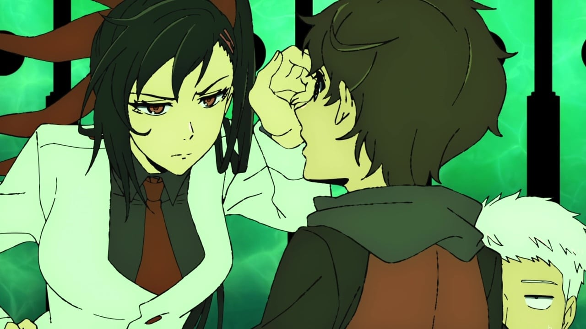
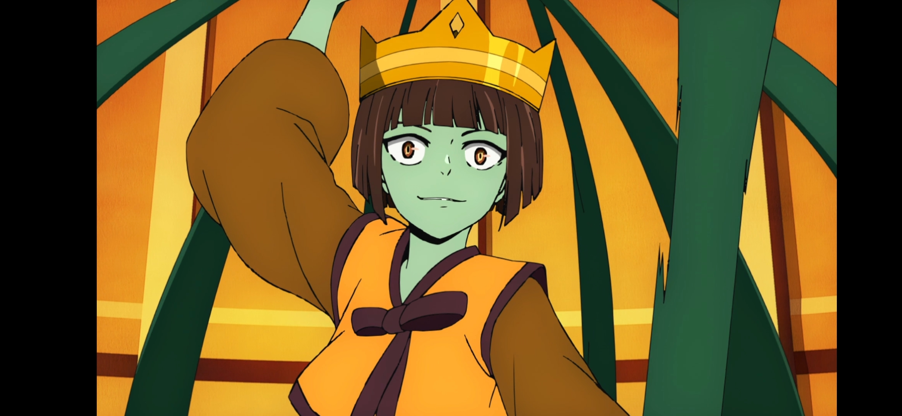
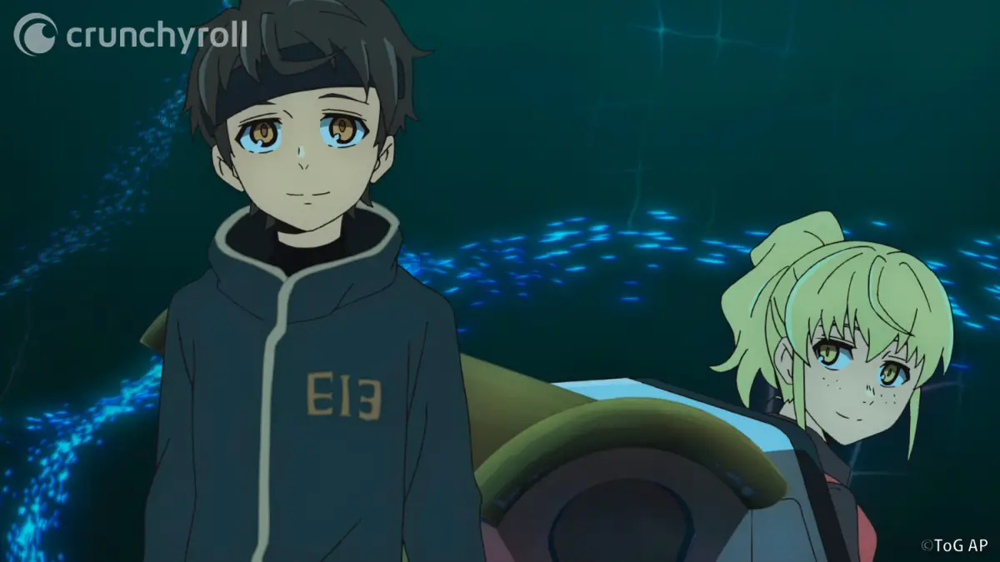

Episódios Favoritos

Episódio 1 - A Chegada
Baam chega à Torre e começa a entender o complexo sistema de desafios e provas que definem a jornada para alcançar o topo.

Episódio 4 - A Abril Verde
No episódio 4 de Tower of God, Baam e seus amigos enfrentam um teste brutal para avançar na Torre, enquanto começam a perceber que suas habilidades e escolhas podem determinar seu destino.

Episódio 12 - Caça subaquática
No episódio 12 de Tower of God, Baam e seus aliados enfrentam novos desafios na 77ª camada da Torre, enquanto confrontam suas próprias motivações e lealdades, levando a um intenso momento de suspense e reflexão sobre suas jornadas.